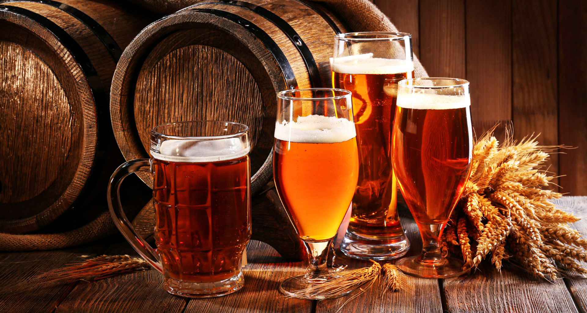
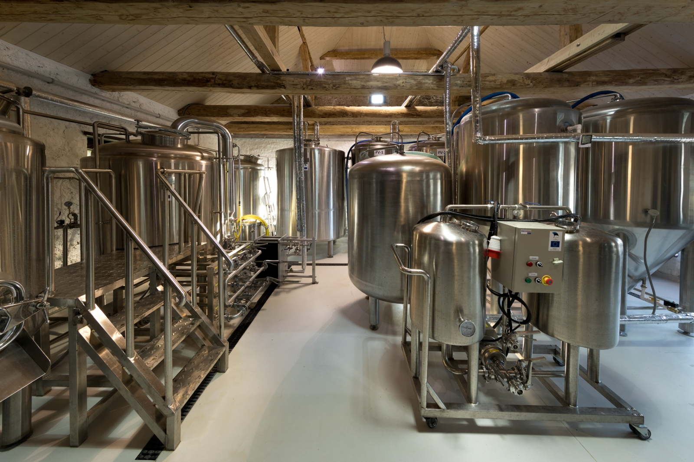

О компании
Новочеркасский пивоваренный завод с 1904 года производит немецкое живое пиво по традиционному рецепту.
Пивзавод является архитектурным и культурным наследием города.
Ежегодная производительность завода — более 500 тысяч декалитров пива, которое реализуется в Новочеркасске и других городах и станицах области.
Пивзавод является архитектурным и культурным наследием города.
Ежегодная производительность завода — более 500 тысяч декалитров пива, которое реализуется в Новочеркасске и других городах и станицах области.

ВАРИМ ПИВО
С 1904 ГОДА
С 1904 ГОДА